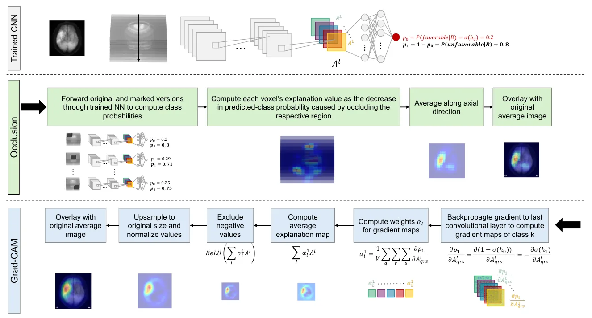
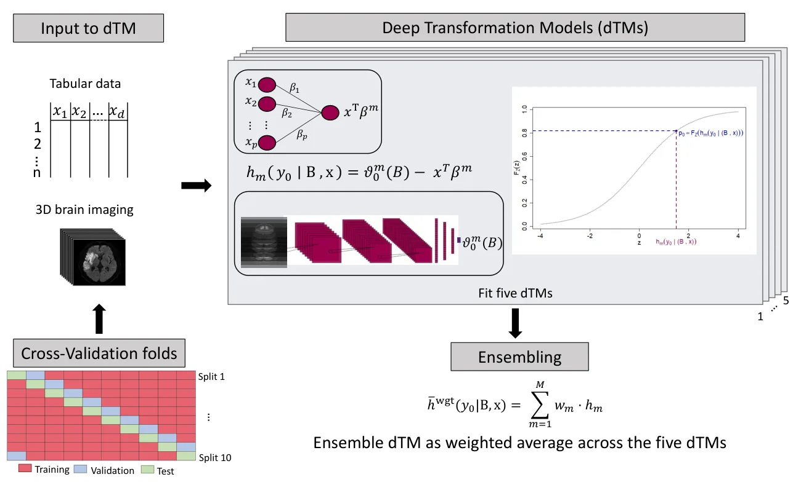
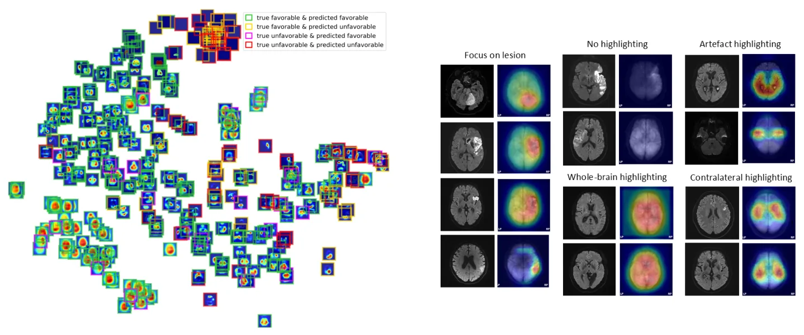
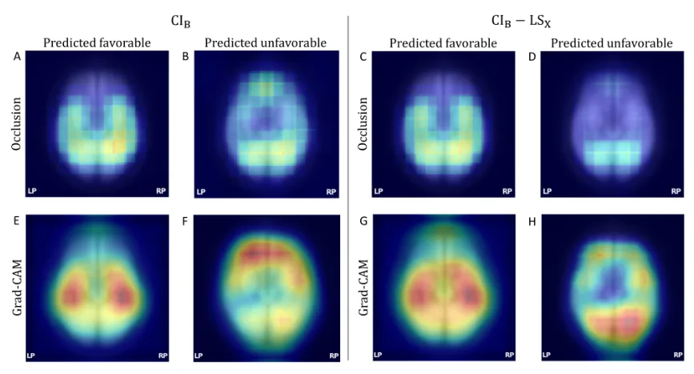
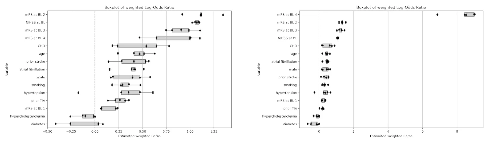
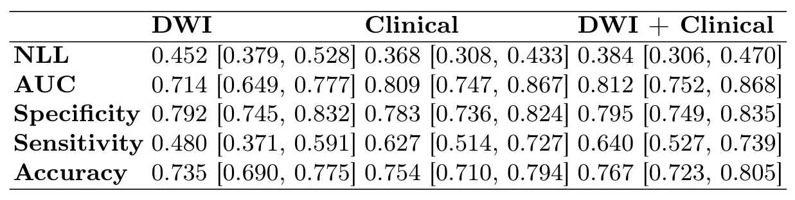

用于 stroke outcome 预测的多模态 Deep Transformation Models 解释性Explainability in mulimodal deep transformation models for stroke outcome prediction
方向明显偏医学影像，和 SLAM/GNSS/三维重建主线不匹配；仅保留 3D CNN 解释性方法参考。
一句话工作总结
医学 3D CNN/xAI 论文；可作为多模态模型解释和 confounding 分析参考，但与定位建图无直接关系。
摘要
论文把 diffusion-weighted imaging 与临床 tabular 数据结合到 multimodal Deep Transformation Models 中，并把 Grad-CAM 和 Occlusion 适配到依赖 3D CNN 的图像分支，以解释三个月后 functional independence 预测。407 名患者十折交叉验证中，模型 AUC 为 0.81 [0.75, 0.87]。解释图显示若不显式输入年龄，模型会在 frontal lobe 等与年龄相关区域形成显著响应；加入 age 作为 tabular predictor 后，这些区域消失，说明解释图有助于发现 confounding 和系统性错误。
Multimodal prediction models based on imaging and clinical data are increasingly used for clinical decision support, yet their interpretability remains limited. We present multimodal Deep Transformation Models (DTMs) combining statistical approaches and neural networks to achieve strong predictive performance while preserving interpretability for tabular data. A key contribution of this work is the adaption of the xAI methods Grad-CAM and Occlusion to DTMs relying on 3D CNNs, enabling interpretation of the image branch through the generation of explanation maps. We developed DTMs to predict functional independence three months after stroke using diffusion-weighted imaging and clinical data from 407 patients. In a ten-fold cross-validation, the models achieved state-of-the-art predictive performance (AUC 0.81 [0.75, 0.87]) while maintaining interpretability for tabular features, with functional independence before stroke and stroke severity on admission emerging as the strongest predictors. Explanation maps from both xAI methods highlighted consistent regions, including frontal lobe areas which are known to be associated with age, a strong predictor of functional outcome. Notably, these regions disappeared once age was included as an explicit tabular predictor. Similarity analyses of explanation maps revealed distinct spatial patterns, providing meaningful insights into stroke pathophysiology, systematic error analysis and hypothesis generation.
中文解读摘录
- 为什么看：医学影像预测论文，不是机器人或三维重建；只因包含 3D CNN、Grad-CAM/Occlusion 和多模态解释性，方法上与 3D 医学图像 xAI 相关。
- 方法要点：把临床 tabular 数据与 diffusion-weighted imaging 结合到 multimodal Deep Transformation Models；适配 Grad-CAM 和 Occlusion 到依赖 3D CNN 的 DTM 图像分支。
- 结果信号：407 名患者十折交叉验证 AUC 0.81 [0.75, 0.87]；解释图突出与年龄等 outcome predictor 相关的 frontal lobe 区域，加入 age tabular predictor 后这些区域变化。
- 跟踪建议：与 SLAM/GNSS 无直接关系，可跳过；若研究 3D CNN 解释图和 tabular/image confounding，可留作外围参考。
- 链接：abs · PDF
图表/页面预览
{kind=link}

{kind=link}

{kind=link}

{kind=link}

{kind=link}

{kind=link}
